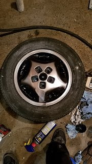
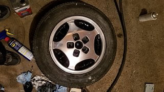
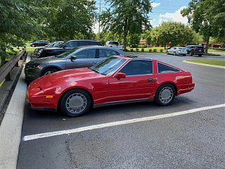
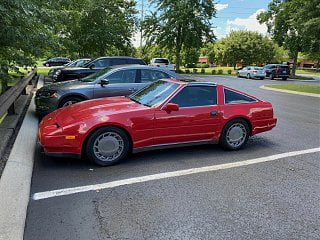
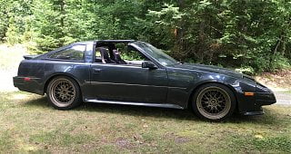
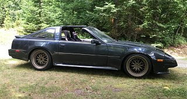

-
Quick tip. If all you want is the blacked out brake vents, spray em with paint, use a hair drier to get them to tack up, and take a paper towel with lacquer thinner to the face. I figured this out after painting one with a q-tip took me an hour, and masking tape was overboard. 1984 GLL 300ZX NA to VG30ET Engine Swap Big Turbo
1987 Auto Rare Kouki Slicktop Velvet-Cake (NA2T in progress: parts sourced) -
I discovered Sunday that a 2004 front tire/rim from a 350Z will bolt to a 2019 Leaf. Offset puts the edge of the tire flush with the outside of the fender. Go figure. Same bolt pattern and center bore. TIre was a 225/50r17 vs factory 215/50r17, so only slightly oversized.--------------
Legal stuff:
**Nissan Employee**
Any information shared is simply my own opinion and NOT the opinion of Nissan
not legal stuff:
'88 300ZX 2+2-- driving… just details left
'22 Q60RS-- I tell the wife it's hers…
'87 Chaparral bowrider-- the next project
'00 Corolla-- kids car.
'14 E-350-- Gotta haul those kids in something. -
-
Hey folks… looking forward to diving back into my Z project after a fairly long hiatus. My youngest son graduated college and got a job, so I'm about to get a hefty pay raise. Just need to save up a little to take care of some debts, then the Z will be my top priority.
It's been nice scrolling through the pages here… reading about someone else who bought back their Z was cool and definitely struck a chord with me. I agree with the OP sentiment about FB groups and would love to see this forum do well. For my part, I just need to figure out what to do about my build thread and all the white space that was once Photobucket links. I have all the pics, so I may take the time to go through and update with the pictures uploaded to this site. I'll need to read up and figure out what my options are. The original file calls look like they've been scrubbed from the html so as not to display all those "Photobucket hates you" images, so it may be a lost cause trying to reconstruct something I started 7 years ago.
Just noticed my signature isn't showing up… just another thing to go figure out (again).'86 NA - original owner (1986-93) and final owner (2005-present)
My build thread: http://z31performance.com/showthread…-Got-mine-back
-
 #79.1Z_Karma commentedThere are chrome plugins that will allow those photobucket images to show up, i can see the one in your signature, but if the links are dead then yeah, reconstructing a build thread and keeping the image context would be a huge pain in the ass.
#79.1Z_Karma commentedThere are chrome plugins that will allow those photobucket images to show up, i can see the one in your signature, but if the links are dead then yeah, reconstructing a build thread and keeping the image context would be a huge pain in the ass.
The chrome plugins i use are:
https://chrome.google.com/webstore/d…fegnfnflicjjgj
https://chrome.google.com/webstore/d…alioapbifiaedg -
Weirdly enough, the signature is now showing up. Pretty sure the firewall at work screws with this site… never seem to remember to look at it at home. Guess I've got my priorities straight…
-
-
Just dropping by to say Hi.
Been a long while. Guess I missed some drama. (when wasnt there)
Might even look at one of the Zs once the snow clears and it warms up.
I've got a few other projects opened a nonprofit makerspace, working on a few Suzuki Bikes, got an M45 and D22 Frontier SC.
DD:
86 Black Turbo 5spd
The Fallen:
84 red n/a auto Slicktop, 86 Black 2+2 n/a 5spd
Parting Currently:
86 White Turbo 5spd, 88 n/a 5spd, 84 AE, 88 Shiro #64
Garage Sale -
Didn't catch this thread when picking back up the mantle. The quarantine has given me some time and motivation to start on the SS again. FB is too attention hungry, there is no way to keep track of projects. I also believe it is easier to track for sale threads here. But it appears the audience is not88SS - #300 - http://z31performance.com/showthread.php?18360 -
Went to put my R32 wheels on finally and realized I needed some big spacers for the front, which I had, but forgot to bring with me lol. Backs are on and they look great, need to go back with the spacers to get the fronts on. Will make the fronts nearly flush (maybe some tiny poke). -
Got my spare set of 16" 87 Turbo wheels powder coated to as close to the original 463 Dark Grey Metallic powder coat as possible. My friend who did this was also able to separate the metal face of the center cap from the plastic backing and powder coat those too. I should have talked to him about coloring in the "Z" on the center caps but overall I think the wheels look better with the AG2 Aztec Red than the silver wheels I had on before. I had a fresh set of 225/50/ General GMAX RS tires put on too. 
Last edited by Reds89; 07-14-2020, 02:19 PM.

Last edited by Reds89; 07-14-2020, 02:19 PM. -
Pulled my Z out of my dad's garage this summer where it has been sitting frozen in carbonite for the past 8 years. I've been out of the car thing for so long but finally got the itch to get this thing cleaned up and back on the road properly again. It's crazy to see how things have changed since back in the glory days of the mid 2000's when drifting was just coming to be and you could find spare Z31s everywhere you looked for $500. Now I'm cringing at the fact that all of my black interior is long gone in a landfill somewhere and I want an adult car now so all of the pieces are either impossible to find, or are $$$. I've ordered a slew of parts and hoping over the winter to get this thing sorted on Stance coilovers, S13 subframe, Z32 rear brakes, Z33 axles, PBM arms, and rt.Trackpro front BBK. Also going to give a bootleg Route 71 rear wing a shot, replace the missing left side skirt and put on a matching L/F fender. The car is two hours away from my home but at least it has been out of the elements all this time and I'll have a second shot at building it how I always imagined it should be.
 
Last edited by FairladySPL; 09-24-2020, 08:17 AM.

Last edited by FairladySPL; 09-24-2020, 08:17 AM. -
Hey hi. It's been long time since I logged here, and even visit. I had 4 kids, changed 3 times job, but I've still managed to keep my parts car and my restored one. I started in the Z31 community back when Z31.com was still an active forum, there was no Nistune but Romulator, Powertrix was not existing, and I even bought parts on Z31performanceparts.com. However still like how deep some people had worked and stock knowledge on this forum for over 10-years.Keep it short. -
Welcome back! Glad to hear you got to keep the Z's!Chicks dig me, rust fears me. -
Hey - Its been a minute. Just checking to see if my username still works
I tried to sell my Z for a bit, but decided to hang onto it and I sold my 24hrs of Lemons car instead.
I took it to gingerman twice last summer and its getting to be a fun track toy. I've just bought a trailer and plans to do more this coming season!Last edited by ShamWow; 01-19-2021, 09:22 AM."produce first.talk second." -
Sorry if not allowed, but this is the only way I can get in? Is my account restricted or something? I cant make posts or threads and none of the buttons work when i click on them, and only certain links work. Trying to make a post in the social lounge and it wont let me!! Its the same scenario on my work lap top, home PC and my iPhone. Even logging in is being troublesome… I cant even send private messages or change my profile/user settings. Tried the "contact us" feature and when i click submit it says failed due to missing security token. I'm confused… -
@Twisted'Z Something seems broken with a lot of the functions of the message board, it's not just your acct.
84 AE/Shiro #683/Shiro #820/84 Turbo -
Ah okay, I looked around for other people posting about similar issues and didn't find anything so I figured it was just on my end. Not familiar with this new layout didn't help either, lol!


Copyright © 2006–. All rights reserved. Privacy Policy
Comment